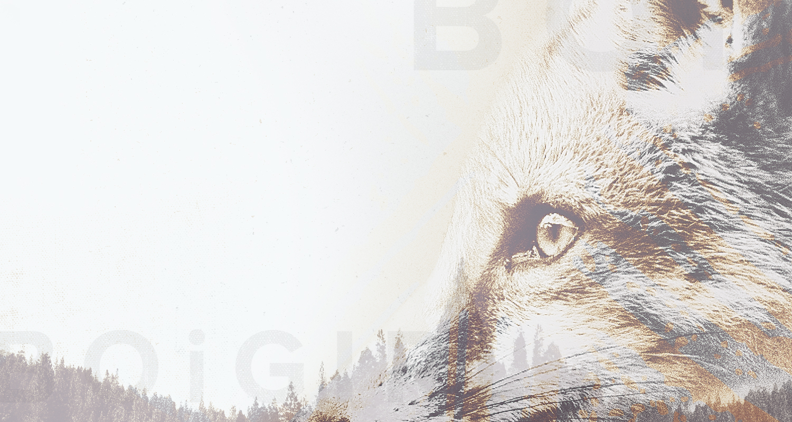

<div class="main-body col-sm-12 text-center">
      <h1>About</h1>
        <div class="col-sm-6 about-img">
          
        </div>

        <div class="col-sm-6 about-text">
          <p>Boigirl is an LA based band that consists of three dudes (Chris, James, Josh) and a trans guy (Casper) makin' alt / post-hxc music. They've released 2 singles, "Casualty Count" and "Unapologetically" to positive feedback, including a feature in <a href="http://buzzbands.la/2016/01/09/ears-wide-open-boigirl/"> BuzzbandsLA </a>.</p>

          <p>James formerly played in Fractures while Chris and Casper worked together in Sound the Sky (2010-2012). Sound the Sky gained press in the Ventura Star, commercial air-play on Live 105.5, and received mentions in the VC Reporter, AMP Magazine, and <a href="http://iheartmoosiq.tumblr.com/post/14891324044/sound-the-sky" target="_blank">I Heart Moosiq blog</a>.</p>

          <p>STS also won a spot to play Warped Tour through Ernie Ball's BOTB. They've shared the stage with many bands including La Dispute, Balance & Composure, Hawthorne Heights, PK (Night Riots), I Am Empire.</p>
        </div>
  </div>

